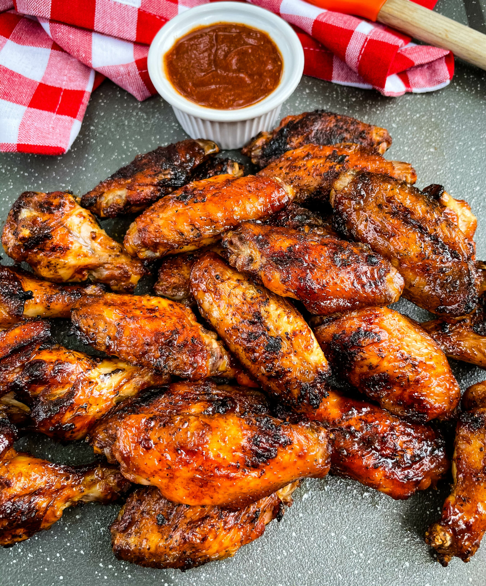

Grilled Wings

Description
This grilled wing recipe is always a hit! I grill them up before a
party and keep them hot in a low oven. I always use Frank's RedHot
sauce. It's got lots of flavor and isn't too spicy.
Ingredients
Wings
- 3 pounds chicken wings, cut apart at joints, wing tips discarded
- ½ cup soy sauce
- ½ cup Italian-style salad dressing
Sauce
- ¼ cup butter
- ¼ cup hot pepper sauce (such as Frank's RedHot®), or to taste
- 1 teaspoon soy sauce
Directions
- Prepare the chicken
- Preheat the grill
- Prepare the sauce
- Pat chicken dry after removing it from marinade
- Cook chicken until registers 165 degrees internally
- Toss chicken in large bowl to spread sauce